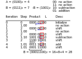
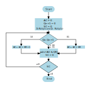

Multiplication and Divsion
Multiplication operations can be implemented in very different ways: Slow, as a serial operation, controlled by a micro program or fast in dedicated hardware.
The division is a more complex operation, and thus will be discussed in another post. Also for multiplication we set the scope to unsigned integer numbers.
Shift left and shift right
For multipliers that are powers of two, the operation is very simple and can be implemented via a shift left.
A shift left by one bit equals a multiplication by 2, as left shift by n bits equals a multiplication by 2^n.
A shift right is a division by 2, a right shift by n bits is a division by 2^n
The multiplication algorithm
Of course we are not only interested in the special case of base two multipliers, but rather want the multiplication operation to work on all numbers we defined above. We begin with a serial multiplication implementation.
To start with, we analyze the steps of a binary multiplication, which frankly does not differ much from a multiplication in the decimal system and is even simpler. We multiply 7 times 6 in the binary system which results in 42.
multiplicand x multiplier = product
\[ \begin{aligned} 0111_2 \times 0110_2 \\ \hline 0000 \\ 011110 \\ 011100 \\ 0111000 \\ \hline 0101010 \\ \end{aligned} \]
As we can see, based on that example, the multiplication operation is a sequence of shifting and addition. From this, we can now dissect the multiplication operation and derive an algorithm from it.
For details we refer to the original source: Rechnerentwurf: Rechenwerke, Mikroprogrammierung, RISC by R. Hoffman, third edition, Oldenbourg Verlag.
We have a multiplicator of X[n] and a multiplier of Y[m], then the product of the multiplication operation results in P[n+m], meaning the size of the operation, logically, is the addition of both the size of the multiplicator and the multiplier.
Booth Algorithm
The booth algorithm is one of the most efficient algorithm, as said above, it is again a series of shifting and addition. But here the three following rules have to be considered (see here for reference ): 1. The multiplicand is subtracted from the partial product upon encountering the first least significant 1 in a string of 1’s in the multiplier 2. The multiplicand is added to the partial product upon encountering the first 0 (provided that there was a previous ‘1’) in a string of 0’s in the multiplier. 3. The partial product does not change when the multiplier bit is identical to the previous multiplier bit.
The booth algorithm applied can be watched here: 
Booth hardware implementation and flowchart
The booth multiplier, shown below, consist of the registers A,B for the multiplier and multiplicand and Q for the result. The register AC is the accumulator,the bit register BR and the register QR. An extra flipflop Qn+1 is used to check the multiplier.The flowchart is given below.

Initially the accumulator and the flipflop Qn+1 are cleared, reset to zero.The sequence counter SC ist set to the number of bits n of the multiplier. Then the two bits in Qn and Qn+1 are checked. In case these are 10 the multiplicand gets subtracted from the partial product residing in the Accumulator AC. In case they are 01 the multiplicand gets additioned to the partial product residing in the Accumulator AC. When the two bit are the same (00,11) the partial product is unchanged. Since the subtraction and addition alternate, an overflow cannot occur. As next step the partial product and the multiplier (plus Qn+1) are shifted right. This is an arithmetic shift (ashr) which shifts AC and QR to the right, thus the sign bit in AC is unchanged. The sequence counter is decremented and the computational loop gets repeated n times. When multiplying negative numbers we need to find 2’s complement because it is easier to add instead of doing a binary subtraction.